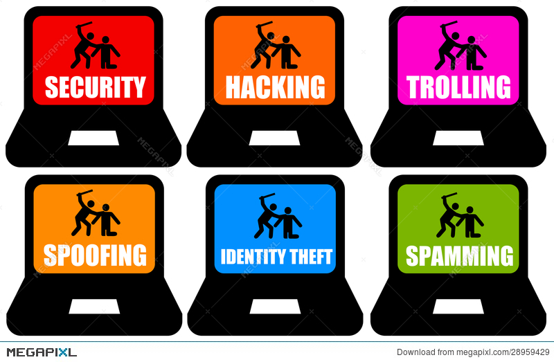

Truslar på nett
Truslane på nett har vorte større enn dei var før. Fleire og fleire kan hacke seg inn på internettet ditt og overvåke alt du gjer. Om du har eit kamera på smart-tven din, kan desse hackarane sjå gjennom kameraet ditt, og sjå kva du gjer. Det er også ulike nettsider du kan besøke som gjer at du kan få virus innpå maskina di dersom du lastar ned noko, eller berre besøker desse nettsidene. Desse virusa er ofte skadlege for maskina di, og kan få tak i alt du har lagra på maskina av brukarnamn, passord og kortinformasjon dersom du trykkar på ein feil knapp.